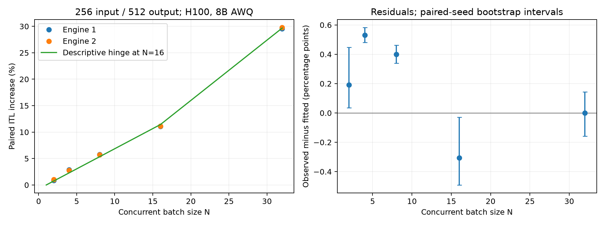

Batch size and inter-token latency
This report examines how concurrent batch size affects the inter-token latency of a target request on a single H100. We tested Llama-3.1-8B-Instruct AWQ with 256 input tokens and 512 output tokens at six batch sizes. Two engine launches, each with 12 paired repeats per size, produced 144 formal batches.
The measured latency increase relative to a single request ranged from approximately 1% at batch size 2 to 30% at batch size 32. The following sections describe the measurement procedure, the variation between repeats, and a descriptive regression model.
Research question
Batching is a central feature of language-model serving: several requests share the same model execution. The question in this experiment is how increasing that concurrent workload changes the time between successive output tokens for one designated request. This is a latency question. A larger batch may improve aggregate throughput while also increasing the latency experienced by each request; throughput improvement was not the outcome analyzed here.
We measured six concurrent batch sizes, N = 1, 2, 4, 8, 16, and 32, using the same target prompt and a matched sampling seed within each repeat. The observed average paired increases were approximately 0.95%, 2.82%, 5.73%, 11.12%, and 29.67% relative to N = 1. Both engine launches produced a similar pattern. Within this configuration and token-position window, increasing concurrency was associated with a progressively higher per-request inter-token latency.
The result is narrower than a general scaling law. It describes one model, one GPU allocation, and one input/output length. It does not establish that the same relationship holds for different contexts, hardware, models, or generated histories.
Experimental setup and measurement
The model was Llama-3.1-8B-Instruct in AWQ INT4 format, served by vLLM 0.23.0 on a single NVIDIA H100, with tensor parallelism set to one. Each request received exactly 256 input tokens and generated exactly 512 output tokens. Prefix caching was disabled. The target request occupied slot 0; additional slots supplied distinct companion prompts as N increased.
Each of the two engine launches included 12 paired repeats at every batch size, giving 72 formal batches per launch and 144 in total. Before formal measurement, every size completed two full warmup batches. Within each six-repeat block, each size occupied every order position once. This balances order position but does not guarantee that all effects from the preceding workload are balanced.
Inter-token latency was computed from CPU-visible model-output-ready timestamps in the engine. We excluded first-token/prefill timing and intervals that touched changing batch composition. The stable analysis window covered absolute positions 258 through 767. These timestamps describe the instrumented engine interface; they are not direct measurements of individual GPU kernel durations.
The paired estimator compares the target request at matching positions within the same repeat. We take the median of these position-level latency ratios and then average the resulting repeat-level effects. This reduces sensitivity to a moving baseline without treating neighboring tokens as independent experimental replications.
Results
The outcome is inter-token latency (ITL) of a designated target request, not aggregate throughput. Each engine launch includes 12 paired repeats per size. Both launches use the same GPU allocation.
Bars show paired increases. Error bars are within-launch 95% bootstrap intervals, without multiple-comparison adjustment.
| Batch size N | ITL¹ (ms) | Repeat CV | Paired increase | 95% interval |
|---|
Variation between engine launches
First launch
Across-size repeat CV: 0.028–0.089%.
N = 1 baseline: 4.1902 ms.
Second launch
Across-size repeat CV: 1.15–1.44%.
N = 1 baseline: 4.1292 ms.
Despite shifts in absolute latency and variability, paired effects were similar: approximately +2.8% at N = 4, +5.7% at N = 8, and +11.1% at N = 16. The earlier two-repeat MVP estimate of +0.5% was not stable.
Uncertainty in the paired estimates
The contrast between launches is an important part of the result. In the first launch, the coefficient of variation of per-repeat ITL medians was below 0.1% at every size. In the second, it was around 1.15–1.44%. The average N = 1 baseline also shifted from 4.1902 ms to 4.1292 ms. A comparison based only on unpaired average latencies would conceal this change in the measurement environment.
Pairing provides a more informative comparison because each repeat includes its own N = 1 reference. For N = 2, the estimated increase was 0.89% in the first launch and 1.02% in the second. Their within-launch bootstrap intervals were approximately [0.84%, 0.93%] and [0.74%, 1.50%], respectively. The second interval is wider, consistent with greater variability. These intervals are conditional summaries of the observed repeats, not guarantees about performance on another day or node.
The two-repeat MVP had suggested an increase near 0.5%. The larger experiment shows why that estimate should not have been treated as stable. More repeats and a second engine launch changed the estimated magnitude while preserving the broader finding that the N = 2 effect is modest compared with the effects at larger batch sizes.
There are only two engine launches, both within one GPU allocation. They provide a useful reproducibility check at the measured sizes, but they do not support a precise estimate of between-job or between-machine variance. We therefore report both launches separately rather than presenting all measurements as fully independent runs.
Regression model
A piecewise linear regression anchored at N = 1. The fitted quantity is the repeat-averaged median of matched-position ITL ratios. Converting this ratio to absolute latency is approximate; calibrate T(1) in the same environment.
Formula estimate:
Conditional parameter uncertainty
a = 0.00762; 95% interval [0.00750, 0.00778]
b = 0.00379; 95% interval [0.00352, 0.00396]
The fitted expression is a descriptive approximation.Fit RMSE is 0.34 percentage points, with a maximum error of 0.53 points at measured sizes. Several residuals exceed uncertainty in the observed means. The knot at N = 16 was chosen after inspecting the data; only N = 32 lies above it, so a true breakpoint has not been established.

| Candidate model | In-sample RMSE (percentage points) |
|---|---|
| Linear | 1.34 |
| Power law | 0.83 |
| Quadratic | 0.61 |
| Piecewise linear | 0.34 |
This comparison is descriptive, not independent validation of the selected shape. Use observed cell means for precise reporting at measured sizes.
Model specification and interpretation
Write Z(j,r,N) for the relative increase in the paired position-median ITL ratio for engine launch j, repeat r, and batch size N. The descriptive model is Z(j,r,N) = a(N−1) + b max(N−16, 0) + ε(j,r,N). It is anchored at zero increase for N = 1. We fit a and b by equal-weight least squares; errors may be correlated across sizes within a paired seed block and may have different variances across launches or sizes.
The first coefficient describes an approximate increase of 0.762 percentage points per additional concurrent request up to the chosen knot. Above N = 16, the formula adds a second slope, giving a combined increase of about 1.141 percentage points per additional request. These are descriptive slopes, not identified hardware mechanisms. In particular, the measurements do not show whether a change in kernel behavior, scheduling, memory traffic, or another factor explains the shape.
For coefficient uncertainty, the bootstrap resamples entire seed blocks, keeping all sizes and both engine launches together. This preserves the dependence introduced by shared prompts and seeds. The parameter intervals condition on the observed launches and the chosen model. They do not account for uncertainty from choosing the knot after viewing the data.
The formula is useful for a compact engineering summary, but it is not an exact statistical explanation. Its largest deviation from a measured mean increase is about 0.53 percentage points, and some systematic residuals exceed the uncertainty of the observed means. At measured sizes, the empirical table is therefore preferable to the formula when numerical accuracy matters.
Only one tested size lies above N = 16. Consequently, the additional slope depends on the N = 32 observation, and the apparent breakpoint has not been independently validated. A leave-N = 32-out fit cannot identify that extra slope. Similar fits across the two engine launches do not resolve this issue because both launches use the same size grid.
Validation and limitations
CUDA graph coverage was checked explicitly. Every tested size was warmed before formal measurement, and all 144 formal batches passed trace validation with zero audited increases in graph capture or compilation counters. The observed increases therefore have no detected contamination from those one-time operations during the formal batches.
The target prompt and seed were matched across N, but generated token sequences were not always identical. The experiment consequently estimates the behavior of matched-input, matched-seed workloads, rather than the effect of concurrency under a forced identical token history. This distinction matters when interpreting the comparison as causal or attempting to isolate a single implementation mechanism.
- Six sizes: 1, 2, 4, 8, 16, 32. Twelve repeats and two full warmup batches per size per engine launch.
- Every six repeats balance each size across all order positions. Carryover effects are not necessarily balanced.
- The target prompt and within-repeat seed are fixed across sizes. Generated token histories can diverge; this is not an identical forced-token-trajectory comparison.
- All formal batches passed trace validation with zero audited capture/compile increments. Statistical units are paired repeats or seed blocks, not individual tokens.
- Stable absolute positions: 258–767. Timestamps record CPU-visible engine output readiness, not GPU kernel timing.
- Two engine launches on one GPU allocation do not establish across-node or across-day variability. Results do not extend to longer contexts, other models, N > 32, power, or energy efficiency.
Reports and data
Full modeling report · Both launches: JSON data · Figure PDF · Parameter intervals
Job 17132827 · COMPLETED · 15 min 58 sec · No external tracking scriptsDiscussion
Under the tested conditions, the target request had higher inter-token latency at larger concurrent batch sizes. The two launches gave similar paired increases despite different levels of repeat-to-repeat variation. The result supports a modest latency penalty at N = 2 and a substantially larger penalty at N = 32, within the measured context window.
The regression provides a convenient approximation to these six observations. Its residuals and the sparse coverage above N = 16 limit a stronger interpretation. Additional measurements at N = 12, 20, 24, and 28 would test the formula at sizes that were not used to fit it. Longer input and output sequences, followed by independent GPU allocations, would be needed to assess whether the relationship extends beyond this experiment.